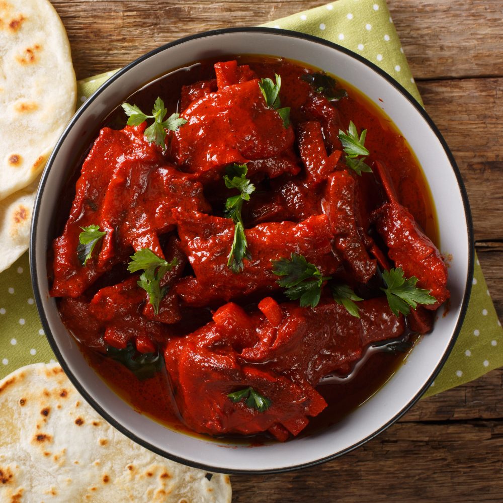

Serving Size:Serves 4
Prep Time:
20 min (+1 hr marination)
Cook Time:
1 hr
Total Time:
2 hrs 20 min
Ingredients:
• 1kg mutton
• 15-20 red Mathania chilies
• 8-10 garlic cloves
• 2 inch ginger
• 1 cup curd
• 2 tbsp ghee or mustard oil
• 2 onions, sliced
• 1 tsp coriander powder
• 1/2 tsp turmeric
• 1/2 tsp cumin seeds
• 4 green cardamoms
• 1 inch cinnamon stick
• Salt to taste
`,
`
Instructions:
1. Soak chilies, make paste with garlic and ginger.
2. Marinate mutton with curd, chili paste, turmeric, salt for 1 hr.
3. Heat ghee, add cumin, cardamom, cinnamon, onions. Sauté until golden.
4. Add marinated mutton, coriander powder, cook 10 min.
5. Add water, cover and cook 1 hr until tender.
6. Serve hot with rice or roti.`)">
Laal Maas